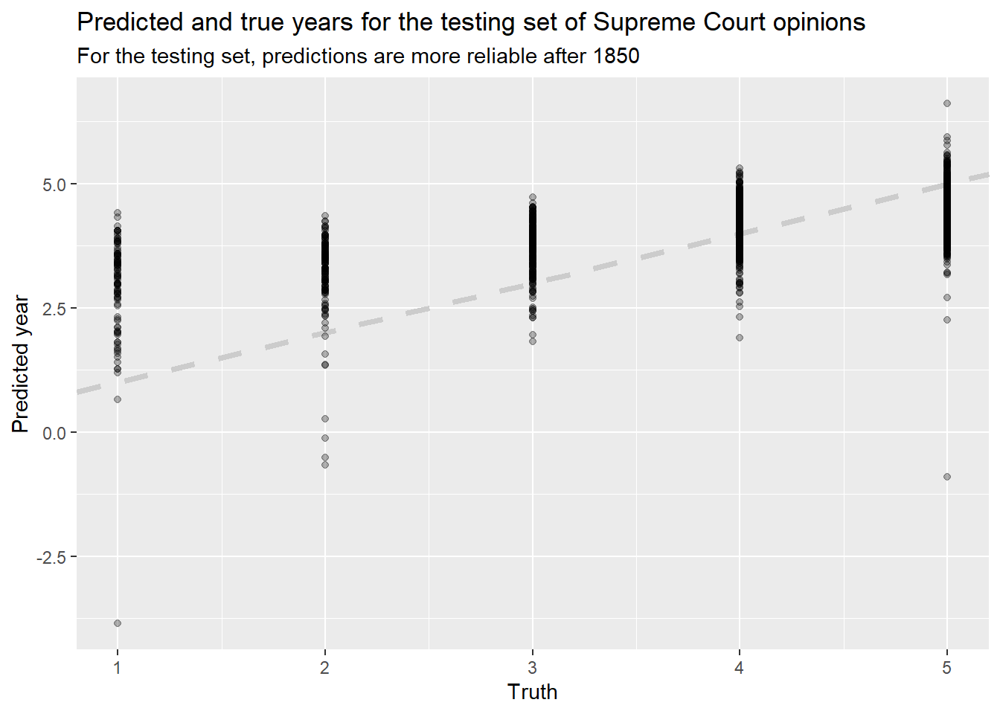

Chapter 5 A First LASSO Attempt
5.1 Introduction
This analysis will use regression methods to attemp to predict star ratings from the text and/or titles of the reviews in our Yelp, Goodreads, and MEC datasets. My methods will closely follow those given in Chapter 6 of Supervised Machine Learning for Text Analysis in R (SMLTAR) by Hvitfeldt & Silge. In the first case I will work through an example in detail to describe the steps (and to learn them!!), and in later sections I will move more quickly to try some different variations on the analysis.
I’m going to use the tidymodels framework as much as possible, both because it’s the approach used in SMLTAR and because I’m a fan of the Tidyverse approach to software design and analysis.
5.2 A First Regression: Yelp Data
I will begin with the Yelp data because we have a lot of it, and because based on our EDA it seemed to be “cleaner” than the Goodreads data which had a lot of duplicate posts, spam posts, plot summaries, etc.
reviews_yelp <- read_csv("../tests/data/ottawa_yelp_reviews.csv") %>%
mutate(date = lubridate::mdy(date)) %>%
rename(text = comment,
rating_num = rating)## Parsed with column specification:
## cols(
## business = col_character(),
## name = col_character(),
## date = col_character(),
## comment = col_character(),
## rating = col_double(),
## url = col_character()
## )## # A tibble: 9,402 x 6
## business name date text rating_num url
## <chr> <chr> <date> <chr> <dbl> <chr>
## 1 La Squadra Alain G. 2017-08-21 Confession: I am a foodie and I am a restaurant trained amateur Chef.<br>Been wanting to try this~ 5 http://www.yelp.ca/biz/la-squa~
## 2 La Squadra Amelia J. 2018-12-19 I came here for a Christmas lunch with coworkers and we tried the set Christmas menu (appetizer + ma~ 4 http://www.yelp.ca/biz/la-squa~
## 3 La Squadra Michael ~ 2017-07-03 Beautiful venue, great service and incredible food. Try Squadra pasta and pizza...and the Arancini ~ 5 http://www.yelp.ca/biz/la-squa~
## 4 La Squadra Cee Y. 2019-03-30 My husband and I stopped into this place as per a recommendation by Yelp. We had a fantastic time an~ 5 http://www.yelp.ca/biz/la-squa~
## 5 La Squadra Luc S. 2018-03-04 Best Italian restaurant in Gatineau ! The food is authentic and fresh with good wine recommendation.~ 5 http://www.yelp.ca/biz/la-squa~
## 6 Kallisto Greek Re~ Amster S. 2020-04-18 I&#39;ve been here twice. Once with my work friends and second with my family. I will come back ~ 5 http://www.yelp.ca/biz/kallist~
## 7 Kallisto Greek Re~ Reema D. 2020-01-12 Waitress was pretty slow. Didn&#39;t take our dinner orders until after we finished apps and she~ 4 http://www.yelp.ca/biz/kallist~
## 8 Kallisto Greek Re~ Jennifer~ 2018-05-21 My husband and I had dinner here recently and overall it was very good 3.75 stars, rounded up to 4.<~ 4 http://www.yelp.ca/biz/kallist~
## 9 Kallisto Greek Re~ Teena D. 2018-02-07 I had lunch today at Kallisto Greek Restaurant.<br><br>I love chicken souvlaki and that&#3~ 2 http://www.yelp.ca/biz/kallist~
## 10 Kallisto Greek Re~ Janie M. 2019-06-26 Find there&#39;s always warm and friendly service. Best Greek food in Ottawa! My son, daughter ~ 5 http://www.yelp.ca/biz/kallist~
## # ... with 9,392 more rows5.2.1 Splitting the data
First we will split our data into a training set and a testing set. This is a standard practice, wherein we build a model using the training data but set aside some other data so we can test it later. Otherwise we might have concerns about overfitting or model validity.
I’m setting the value strata = "rating_num" to ensure that our random sampling has about the same distribution of star ratings as our full population–see the documentation for initial_split().
set.seed(1234)
yelp_split <- reviews_yelp %>%
initial_split(strata = "rating_num")
yelp_train <- yelp_split %>%
training()
yelp_test <- yelp_split %>%
testing()The next step is to define our preprocessing steps: the stuff we’ll do to the text before we put it into a regression model. In the tidymodels approach we do this by creating a “recipe” objects and then adding a number of steps to it. We modify the object by using the pipe operator to add a bunch of steps to it using verb functions. This makes it easy to read the step-by-step process and understand what’s going on.
I’ll note, though, that when I follow SMLTAR’s guide the recipe still includes explicit references to the dataset we’re analyzing, so it’s not a completely generic object that could be applied to other datasets: we would need to make other recipes for MEC and Goodreads. There may be more advanced ways to create generic recipes that can be reused.
Here, following SMLTAR, we will use a recipe with the following steps:
- Tokenizing the text, which means breaking it down into constituent bits (words here),
- Filtering the tokens based on frequency, taking only the 250 most-common tokens, (NOTE this is not many tokens!!)
- TFIDF, or “term frequency inverse document frequency,” which weights each token based on both how frequent it is and on how common it is across documents (see
step_tfidf()’s help page for details), and then - Normalizing so our lasso regression will work properly.
num_tokens <- 250
yelp_rec <- recipe(rating_num ~ text, data = yelp_train) %>%
step_tokenize(text) %>%
step_tokenfilter(text, max_tokens = num_tokens) %>%
step_tfidf(text) %>%
step_normalize(all_predictors())
rm(num_tokens)
yelp_rec## Data Recipe
##
## Inputs:
##
## role #variables
## outcome 1
## predictor 1
##
## Operations:
##
## Tokenization for text
## Text filtering for text
## Term frequency-inverse document frequency with text
## Centering and scaling for all_predictors()Next, Hvitfeldt and Silge suggest we create a workflow() object that combines preprocessing steps and models.
## == Workflow ====================================================================
## Preprocessor: Recipe
## Model: None
##
## -- Preprocessor ----------------------------------------------------------------
## 4 Recipe Steps
##
## * step_tokenize()
## * step_tokenfilter()
## * step_tfidf()
## * step_normalize()We now define a lasso regression model using parsnip. My understanding is that this acts as a “tidy wrapper” around other functions/packages, in this case glmnet, that lets you use them in a tidy way. I believe it can also make it easier to swap out models or parameters without having to completely rewrite your codebase.
Note that penalty = 0.1 is arbitrary and we’ll look into that parameter more closely later.
lasso_model <- parsnip::linear_reg(penalty = 0.1, mixture = 1) %>%
set_mode("regression") %>%
set_engine("glmnet")
lasso_model## Linear Regression Model Specification (regression)
##
## Main Arguments:
## penalty = 0.1
## mixture = 1
##
## Computational engine: glmnetNow we add the lasso model to the workflow and run the model. This takes about 9 seconds on my machine using only 250 tokens. (I expect we’ll need to use more to get a good result.)
## 8.82 sec elapsedWe can look at the terms with the highest coefficients in the model:
## Loading required package: Matrix##
## Attaching package: 'Matrix'## The following objects are masked from 'package:tidyr':
##
## expand, pack, unpack## Loaded glmnet 4.0-2## # A tibble: 251 x 3
## term estimate penalty
## <chr> <dbl> <dbl>
## 1 (Intercept) 4.16 0.1
## 2 tfidf_text_amazing 0.0490 0.1
## 3 tfidf_text_delicious 0.0395 0.1
## 4 tfidf_text_great 0.0379 0.1
## 5 tfidf_text_best 0.0307 0.1
## 6 tfidf_text_and 0.00624 0.1
## 7 tfidf_text_2 0 0.1
## 8 tfidf_text_3 0 0.1
## 9 tfidf_text_34 0 0.1
## 10 tfidf_text_39 0 0.1
## # ... with 241 more rowsThis already doesn’t look too promising; only 5 terms have positive coefficients, and the intercept is 4.16. But let’s see how it goes.
5.2.2 Evaluating the first model
Following SMLTAR, we’ll evaluate the model using cross-fold validation, which is a way of trying to squeeze as much validation as you can out of a finite dataset. We will resample our training dataset to create 10 new datasets, and in each one we’ll use 90% for training and 10% for assessment.
set.seed(1234)
yelp_folds <- vfold_cv(yelp_train)
lasso_rs <- fit_resamples(
yelp_wf %>% add_model(lasso_model),
yelp_folds,
control = control_resamples(save_pred = TRUE)
)
tic()
lasso_rs## # Resampling results
## # 10-fold cross-validation
## # A tibble: 10 x 5
## splits id .metrics .notes .predictions
## <list> <chr> <list> <list> <list>
## 1 <split [6.3K/706]> Fold01 <tibble [2 x 3]> <tibble [0 x 1]> <tibble [706 x 3]>
## 2 <split [6.3K/706]> Fold02 <tibble [2 x 3]> <tibble [0 x 1]> <tibble [706 x 3]>
## 3 <split [6.3K/706]> Fold03 <tibble [2 x 3]> <tibble [0 x 1]> <tibble [706 x 3]>
## 4 <split [6.3K/705]> Fold04 <tibble [2 x 3]> <tibble [0 x 1]> <tibble [705 x 3]>
## 5 <split [6.3K/705]> Fold05 <tibble [2 x 3]> <tibble [0 x 1]> <tibble [705 x 3]>
## 6 <split [6.3K/705]> Fold06 <tibble [2 x 3]> <tibble [0 x 1]> <tibble [705 x 3]>
## 7 <split [6.3K/705]> Fold07 <tibble [2 x 3]> <tibble [0 x 1]> <tibble [705 x 3]>
## 8 <split [6.3K/705]> Fold08 <tibble [2 x 3]> <tibble [0 x 1]> <tibble [705 x 3]>
## 9 <split [6.3K/705]> Fold09 <tibble [2 x 3]> <tibble [0 x 1]> <tibble [705 x 3]>
## 10 <split [6.3K/705]> Fold10 <tibble [2 x 3]> <tibble [0 x 1]> <tibble [705 x 3]>## 0.02 sec elapsedOur \(R^2\) and RMSEs look really quite terrible:
## # A tibble: 2 x 5
## .metric .estimator mean n std_err
## <chr> <chr> <dbl> <int> <dbl>
## 1 rmse standard 0.985 10 0.00732
## 2 rsq standard 0.147 10 0.0122And when we plot predictions vs. true values, that also looks quite terrible:
lasso_rs %>%
collect_predictions() %>%
ggplot(aes(rating_num, .pred, color = id)) +
geom_abline(slope=1, intercept = 0,color = "gray80", size = 1.5) +
geom_point(alpha = 0.3) +
labs(
x = "Truth",
y = "Predicted Rating",
color = NULL,
title = "Predicted and true star ratings for Yelp reviews",
subtitle = "Each cross-validation fold is shown in a different color"
)
The model generally predicts that everything will have a star rating of between 3 and 5, and is especially poor at predicting lower values.
We’re now operating without much of a map, since the example in SMLTAR worked beautifully (predicting the year a USA Supreme Court decision was written based on its text). However, we can follow one last SMLTAR step by tuning our lasso hyperparameters.
5.2.3 Tuning model parameters
We can repeat the process but use model tuning to set the paramters in our lasso regression. Now instead of choosing a random lasso penalty of 0.1, we’re going to use the tune() function to figure out which penalty gives the best results on our training data.
tune_model <- linear_reg(penalty = tune(), mixture = 1) %>%
set_mode("regression") %>%
set_engine("glmnet")
tune_model## Linear Regression Model Specification (regression)
##
## Main Arguments:
## penalty = tune()
## mixture = 1
##
## Computational engine: glmnetWe create a grid of values to try:
And now we use the function tune_grid() to fit our model at many different parameter values to see how they fare on our cross-fold validation set. Note: this takes a long time, 81.5 seconds for the 250-token model on my machine.
set.seed(1234)
tic()
tune_rs <- tune_grid(
yelp_wf %>% add_model(tune_model),
yelp_folds,
grid = lambda_grid,
control = control_resamples(save_pred = TRUE)
)## ! Fold01: internal: A correlation computation is required, but `estimate` is constant and has 0 standard deviation, resulting in a divide by 0 error. `NA` will be returned.## ! Fold02: internal: A correlation computation is required, but `estimate` is constant and has 0 standard deviation, resulting in a divide by 0 error. `NA` will be returned.## ! Fold03: internal: A correlation computation is required, but `estimate` is constant and has 0 standard deviation, resulting in a divide by 0 error. `NA` will be returned.## ! Fold04: internal: A correlation computation is required, but `estimate` is constant and has 0 standard deviation, resulting in a divide by 0 error. `NA` will be returned.## ! Fold05: internal: A correlation computation is required, but `estimate` is constant and has 0 standard deviation, resulting in a divide by 0 error. `NA` will be returned.## ! Fold06: internal: A correlation computation is required, but `estimate` is constant and has 0 standard deviation, resulting in a divide by 0 error. `NA` will be returned.## ! Fold07: internal: A correlation computation is required, but `estimate` is constant and has 0 standard deviation, resulting in a divide by 0 error. `NA` will be returned.## ! Fold08: internal: A correlation computation is required, but `estimate` is constant and has 0 standard deviation, resulting in a divide by 0 error. `NA` will be returned.## ! Fold09: internal: A correlation computation is required, but `estimate` is constant and has 0 standard deviation, resulting in a divide by 0 error. `NA` will be returned.## ! Fold10: internal: A correlation computation is required, but `estimate` is constant and has 0 standard deviation, resulting in a divide by 0 error. `NA` will be returned.## 80.04 sec elapsed## Warning: This tuning result has notes. Example notes on model fitting include:
## internal: A correlation computation is required, but `estimate` is constant and has 0 standard deviation, resulting in a divide by 0 error. `NA` will be returned.
## internal: A correlation computation is required, but `estimate` is constant and has 0 standard deviation, resulting in a divide by 0 error. `NA` will be returned.
## internal: A correlation computation is required, but `estimate` is constant and has 0 standard deviation, resulting in a divide by 0 error. `NA` will be returned.## # Tuning results
## # 10-fold cross-validation
## # A tibble: 10 x 5
## splits id .metrics .notes .predictions
## <list> <chr> <list> <list> <list>
## 1 <split [6.3K/706]> Fold01 <tibble [60 x 5]> <tibble [1 x 1]> <tibble [21,180 x 5]>
## 2 <split [6.3K/706]> Fold02 <tibble [60 x 5]> <tibble [1 x 1]> <tibble [21,180 x 5]>
## 3 <split [6.3K/706]> Fold03 <tibble [60 x 5]> <tibble [1 x 1]> <tibble [21,180 x 5]>
## 4 <split [6.3K/705]> Fold04 <tibble [60 x 5]> <tibble [1 x 1]> <tibble [21,150 x 5]>
## 5 <split [6.3K/705]> Fold05 <tibble [60 x 5]> <tibble [1 x 1]> <tibble [21,150 x 5]>
## 6 <split [6.3K/705]> Fold06 <tibble [60 x 5]> <tibble [1 x 1]> <tibble [21,150 x 5]>
## 7 <split [6.3K/705]> Fold07 <tibble [60 x 5]> <tibble [1 x 1]> <tibble [21,150 x 5]>
## 8 <split [6.3K/705]> Fold08 <tibble [60 x 5]> <tibble [1 x 1]> <tibble [21,150 x 5]>
## 9 <split [6.3K/705]> Fold09 <tibble [60 x 5]> <tibble [1 x 1]> <tibble [21,150 x 5]>
## 10 <split [6.3K/705]> Fold10 <tibble [60 x 5]> <tibble [1 x 1]> <tibble [21,150 x 5]>We can visualize our lasso model’s performance for each parameter value:
tune_rs %>%
collect_metrics() %>%
ggplot(aes(penalty, mean, color = .metric)) +
geom_errorbar(aes(
ymin = mean - std_err,
ymax = mean + std_err
),
alpha = 0.5
) +
geom_line(size = 1.5) +
facet_wrap(~.metric, scales = "free", nrow = 2) +
scale_x_log10() +
theme(legend.position = "none") +
labs(
title = "Lasso model performance across regularization penalties",
subtitle = "Performance metrics can be used to identity the best penalty"
)## Warning: Removed 2 row(s) containing missing values (geom_path).
We generally want to choose the value that minimizes our RMSE (TODO source this claim)
## # A tibble: 5 x 7
## penalty .metric .estimator mean n std_err .config
## <dbl> <chr> <chr> <dbl> <int> <dbl> <chr>
## 1 0.00853 rmse standard 0.903 10 0.0129 Model24
## 2 0.00386 rmse standard 0.904 10 0.0133 Model23
## 3 0.00174 rmse standard 0.905 10 0.0135 Model22
## 4 0.000788 rmse standard 0.906 10 0.0136 Model21
## 5 0.000356 rmse standard 0.907 10 0.0136 Model20And we can extract the penalty that gives us the lowest RMSE using the select_best() function as follows:
And we can put it all together into a final workflow:
SMLTAR says that now it’s ready to go, but I’m not sure how to test it… perhaps
lasso_fit %>%
collect_predictions() %>%
ggplot(aes(rating_num, .pred)) +
geom_abline(slope=1, intercept = 0,color = "gray80", size = 1.5) +
geom_point(alpha = 0.3) +
labs(
x = "Truth",
y = "Predicted Rating",
color = NULL,
title = "Final lasso model: Predicted and true star ratings for Yelp reviews"
)
This model looks better in some ways but worse in others. It’s better in that it gives lower predictions for in-truth lower reviews; it’s worse in that it predicts ratings over 5, and even over 6.5. The spread of predictions is also still quite large, but that may be to be expected with an \(R^2\) of only about 0.25.
5.3 Trying lasso again
5.3.1 With 1000 tokens
Here is the whole process again in a single code block using 1000 tokens.
num_tokens <- 1000
set.seed(1234)
# do initial split
yelp_split <- reviews_yelp %>%
initial_split(strata = "rating_num")
yelp_train <- yelp_split %>%
training()
yelp_test <- yelp_split %>%
testing()
# set up recipe
yelp_rec <- recipe(rating_num ~ text, data = yelp_train) %>%
step_tokenize(text) %>%
step_tokenfilter(text, max_tokens = num_tokens) %>%
step_tfidf(text) %>%
step_normalize(all_predictors())
rm(num_tokens)
yelp_wf <- workflow() %>%
add_recipe(yelp_rec)
# set up our lasso model using tuning parameters
tune_model <- linear_reg(penalty = tune(), mixture = 1) %>%
set_mode("regression") %>%
set_engine("glmnet")
# create a grid of tuning parameters
lambda_grid <- grid_regular(penalty(), levels = 30)
# create cross-validation folds
set.seed(1234)
yelp_folds <- vfold_cv(yelp_train)
# fit our model at many different parameter values using the cross-fold validation set
set.seed(1234)
tic()
tune_rs <- tune_grid(
yelp_wf %>% add_model(tune_model),
yelp_folds,
grid = lambda_grid,
control = control_resamples(save_pred = TRUE)
)
toc()## 182.2 sec elapsed# extract penalty that gives us the lowest RMSE
lowest_rmse <- tune_rs %>%
select_best("rmse")
# put it into a final workflow
final_lasso <- finalize_workflow(
yelp_wf %>% add_model(tune_model),
lowest_rmse
)
# do a last fit
lasso_fit <- final_lasso %>%
last_fit(split = yelp_split)
# see the metrics
lasso_fit %>%
collect_metrics()## # A tibble: 2 x 3
## .metric .estimator .estimate
## <chr> <chr> <dbl>
## 1 rmse standard 0.868
## 2 rsq standard 0.373# and plot it
lasso_fit %>%
collect_predictions() %>%
ggplot(aes(rating_num, .pred)) +
geom_abline(slope=1, intercept = 0,color = "gray80", size = 1.5) +
geom_point(alpha = 0.3) +
labs(
x = "Truth",
y = "Predicted Rating",
color = NULL,
title = "Final lasso model: Predicted and true star ratings for Yelp reviews",
subtitle = "All reviews, 1000 tokens"
)
This has an \(R^2\) of 0.37, which is a big improvement over the 250-token model, but it’s still nowhere near good enough to use in practice.
5.3.2 Short reviews only: <125 words
Let’s try only using reviews under 125 words. It’s possible that shorter reviews are “denser” and more to the point, and that longer reviews contain too much “noise.” This leaves us with 6,323 reviews. I’m also going to try making a function to run the lasso regression with these different inputs.
run_lasso <- function(dataset, num_tokens){
set.seed(1234)
data_split <- dataset %>%
initial_split(strata = "rating_num")
data_train <- data_split %>%
training()
data_test <- data_split %>%
testing()
data_rec <- recipe(rating_num ~ text, data = data_train) %>%
step_tokenize(text) %>%
step_tokenfilter(text, max_tokens = num_tokens) %>%
step_tfidf(text) %>%
step_normalize(all_predictors())
rm(num_tokens)
data_wf <- workflow() %>%
add_recipe(data_rec)
# set up our lasso model using tuning parameters
tune_model <- linear_reg(penalty = tune(), mixture = 1) %>%
set_mode("regression") %>%
set_engine("glmnet")
# create a grid of tuning parameters
lambda_grid <- grid_regular(penalty(), levels = 30)
# create cross-validation folds
set.seed(1234)
data_folds <- vfold_cv(data_train)
# fit our model at many different parameter values using the cross-fold validation set
set.seed(1234)
tic()
tune_rs <- tune_grid(
data_wf %>% add_model(tune_model),
data_folds,
grid = lambda_grid,
control = control_resamples(save_pred = TRUE)
)
toc()
# extract penalty that gives us the lowest RMSE
lowest_rmse <- tune_rs %>%
select_best("rmse")
# put it into a final workflow
final_lasso <- finalize_workflow(
data_wf %>% add_model(tune_model),
lowest_rmse
)
# do a last fit
lasso_fit <- final_lasso %>%
last_fit(split = data_split)
return(lasso_fit)
}max_length <- 125
min_length <- 1
wordcounts_yelp <- reviews_yelp %>%
select(text) %>%
rowid_to_column() %>%
tidytext::unnest_tokens(word, text) %>%
group_by(rowid) %>%
summarise(n = n()) %>%
left_join (reviews_yelp %>% rowid_to_column(), by ="rowid") %>%
select(-rowid)
reviews_yelp_short <- wordcounts_yelp %>%
filter(n <= max_length & n >= min_length )
lasso_results_short <- run_lasso(dataset = reviews_yelp_short, num_tokens = 1000)## 89.07 sec elapsed## # A tibble: 2 x 3
## .metric .estimator .estimate
## <chr> <chr> <dbl>
## 1 rmse standard 0.821
## 2 rsq standard 0.391# and plot it
lasso_results_short %>%
collect_predictions() %>%
ggplot(aes(rating_num, .pred)) +
geom_abline(slope=1, intercept = 0,color = "gray80", size = 1.5) +
geom_point(alpha = 0.3) +
labs(
x = "Truth",
y = "Predicted Rating",
color = NULL,
title = "Final lasso model: Predicted and true star ratings for Yelp reviews",
subtitle = "Short Reviews < 125 Words, 1000 Tokens"
)
This gives us an \(R^2\) of 0.39, slightly better than our full dataset. But looking at the chart, we can see that this won’t be useful in practice either.
5.3.3 Longer reviews > 125 words
For completeness, we’ll also try only using the long reviews > 125 words. It’s possible that these reviews contain more useful information due to their length. This leaves us with 3,104 reviews.
max_length <- 10000
min_length <- 125
wordcounts_yelp <- reviews_yelp %>%
select(text) %>%
rowid_to_column() %>%
tidytext::unnest_tokens(word, text) %>%
group_by(rowid) %>%
summarise(n = n()) %>%
left_join (reviews_yelp %>% rowid_to_column(), by ="rowid") %>%
select(-rowid)
reviews_yelp_long <- wordcounts_yelp %>%
filter(n <= max_length & n >= min_length )
lasso_results_long <- run_lasso(dataset = reviews_yelp_long, num_tokens = 1000)## 72.61 sec elapsed## # A tibble: 2 x 3
## .metric .estimator .estimate
## <chr> <chr> <dbl>
## 1 rmse standard 0.824
## 2 rsq standard 0.429# and plot it
lasso_results_long %>%
collect_predictions() %>%
ggplot(aes(rating_num, .pred)) +
geom_abline(slope=1, intercept = 0,color = "gray80", size = 1.5) +
geom_point(alpha = 0.3) +
labs(
x = "Truth",
y = "Predicted Rating",
color = NULL,
title = "Final lasso model: Predicted and true star ratings for Yelp reviews",
subtitle = "Long Reviews > 125 Words, 1000 Tokens"
)
Now our \(R^2\) has gone up to 0.43, so it is possible that the longer reviews do in fact contain more information. And looking at the chart, the “cloud” of points does creep measurably higher for each true star rating. However,
5.4 Removing stop words
Stop words are common words that contain little information on their own, like “the” and “to.” If using a bag-of-words approach, where you’re not looking at the input text in a way that considers syntax (or, really, sentence-wise semantics) then it can be helpful to remove stop words.
Here I will follow SMLTAR s6.6 to try using three different sets of stopwords, to see which performs best on this dataset.
First, they build a wrapper function to make it easy to build recipes with different stopword sets.
stopword_rec <- function(stopword_name) {
recipe(rating_num ~ text, data = yelp_train) %>%
step_tokenize(text) %>%
step_stopwords(text, stopword_source = stopword_name) %>%
step_tokenfilter(text, max_tokens = 1000) %>%
step_tfidf(text)
}Next we set up a workflow that only has a model, using our tunable regularized regression model from before:
## == Workflow ====================================================================
## Preprocessor: None
## Model: linear_reg()
##
## -- Model -----------------------------------------------------------------------
## Linear Regression Model Specification (regression)
##
## Main Arguments:
## penalty = tune()
## mixture = 1
##
## Computational engine: glmnetNow we will combine our functionized preprocessor with this tunable model and try three different stopword sets: snowball, smart, and stopwords-iso. This takes about 8 minutes on my machine.
set.seed(1234)
tic()
snowball_rs <- tune_grid(
tunable_wf %>% add_recipe(stopword_rec("snowball")),
yelp_folds,
grid = lambda_grid
)
toc()## 176.97 sec elapsedset.seed(1234)
tic()
smart_rs <- tune_grid(
tunable_wf %>% add_recipe(stopword_rec("smart")),
yelp_folds,
grid = lambda_grid
)
toc()## 160.64 sec elapsedset.seed(1234)
tic()
stopwords_iso_rs <- tune_grid(
tunable_wf %>% add_recipe(stopword_rec("stopwords-iso")),
yelp_folds,
grid = lambda_grid
)
toc()## 93.12 sec elapsedAnd we plot their performance, using code straight from SMLTAR:
word_counts <- tibble(name = c("snowball", "smart", "stopwords-iso")) %>%
mutate(words = map_int(name, ~ length(stopwords::stopwords(source = .))))
list(
snowball = snowball_rs,
smart = smart_rs,
`stopwords-iso` = stopwords_iso_rs
) %>%
map_dfr(show_best, "rmse", .id = "name") %>%
left_join(word_counts) %>%
mutate(name = paste0(name, " (", words, " words)")) %>%
ggplot(aes(fct_reorder(name, words), mean, color = name)) +
geom_point(size = 3, alpha = 0.8, show.legend = FALSE) +
labs(
x = NULL, y = "mean RMSE for five best models",
title = "Model performance for three stop word lexicons",
subtitle = "For this dataset, the Snowball lexicon performed best"
)## Joining, by = "name"
The RMSE is marginally better using the snowball set of stopwords, but is still quite terrible!
5.5 Adjusting n-grams
When tokenizing, we can in general consider text strings of any length. So far we have been considering one-word strings, which we could call “unigrams.” We could also consider two-word strings and three-word strings, called “bigrams” and “trigrams” respectively. We might expect using n-grams, where n>1, to increase our accuracy because it will let us capture more of the syntactic information in our text. For example, if we only consider 1-grams then the short phrase “Not bad!” becomes “not” and “bad,” and our model has no way to differentiate between cases where they occur alone (which might be negative) and together (which might be positive). But if we also consider “not bad,” then the model might learn that that phrase is associated with positive reviews.
As before, we follow SMLTAR s6.7 and set up a wrapper function that will let us easily change our model recipe to use different n-grams:
ngram_rec <- function(ngram_options) {
recipe(rating_num ~ text, data = yelp_train) %>%
step_tokenize(text, token = "ngrams", options = ngram_options) %>%
step_tokenfilter(text, max_tokens = 1e3) %>%
step_tfidf(text)
}step_tokenize() takes two arguments, n for the highest-n n-grams to consider, and n_min for the lowest-n ngrams to consider. We will pass these values in the variable ngram_options.
We then out these all together into a wrapper function that will let us run many different models easily:
tune_ngram <- function(ngram_options) {
tune_grid(
tunable_wf %>%
add_recipe(ngram_rec(ngram_options)),
yelp_folds,
grid = lambda_grid
)
}We will try three cases, using n-grams where n=1, n=1,2, and n=1,2,3. I’ve added tic()/toc() calls for loose benchmarking. The processing time goes up with each additional n-gram:
- 1-grams: 186s
- 2-grams: 267s
- 3-grams: 495s
## ! Fold01: internal: A correlation computation is required, but `estimate` is constant and has 0 standard deviation, resulting in a divide by 0 error. `NA` will be returned.## ! Fold02: internal: A correlation computation is required, but `estimate` is constant and has 0 standard deviation, resulting in a divide by 0 error. `NA` will be returned.## ! Fold03: internal: A correlation computation is required, but `estimate` is constant and has 0 standard deviation, resulting in a divide by 0 error. `NA` will be returned.## ! Fold04: internal: A correlation computation is required, but `estimate` is constant and has 0 standard deviation, resulting in a divide by 0 error. `NA` will be returned.## ! Fold05: internal: A correlation computation is required, but `estimate` is constant and has 0 standard deviation, resulting in a divide by 0 error. `NA` will be returned.## ! Fold06: internal: A correlation computation is required, but `estimate` is constant and has 0 standard deviation, resulting in a divide by 0 error. `NA` will be returned.## ! Fold07: internal: A correlation computation is required, but `estimate` is constant and has 0 standard deviation, resulting in a divide by 0 error. `NA` will be returned.## ! Fold08: internal: A correlation computation is required, but `estimate` is constant and has 0 standard deviation, resulting in a divide by 0 error. `NA` will be returned.## ! Fold09: internal: A correlation computation is required, but `estimate` is constant and has 0 standard deviation, resulting in a divide by 0 error. `NA` will be returned.## ! Fold10: internal: A correlation computation is required, but `estimate` is constant and has 0 standard deviation, resulting in a divide by 0 error. `NA` will be returned.## 174.64 sec elapsed## ! Fold01: internal: A correlation computation is required, but `estimate` is constant and has 0 standard deviation, resulting in a divide by 0 error. `NA` will be returned.## ! Fold02: internal: A correlation computation is required, but `estimate` is constant and has 0 standard deviation, resulting in a divide by 0 error. `NA` will be returned.## ! Fold03: internal: A correlation computation is required, but `estimate` is constant and has 0 standard deviation, resulting in a divide by 0 error. `NA` will be returned.## ! Fold04: internal: A correlation computation is required, but `estimate` is constant and has 0 standard deviation, resulting in a divide by 0 error. `NA` will be returned.## ! Fold05: internal: A correlation computation is required, but `estimate` is constant and has 0 standard deviation, resulting in a divide by 0 error. `NA` will be returned.## ! Fold06: internal: A correlation computation is required, but `estimate` is constant and has 0 standard deviation, resulting in a divide by 0 error. `NA` will be returned.## ! Fold07: internal: A correlation computation is required, but `estimate` is constant and has 0 standard deviation, resulting in a divide by 0 error. `NA` will be returned.## ! Fold08: internal: A correlation computation is required, but `estimate` is constant and has 0 standard deviation, resulting in a divide by 0 error. `NA` will be returned.## ! Fold09: internal: A correlation computation is required, but `estimate` is constant and has 0 standard deviation, resulting in a divide by 0 error. `NA` will be returned.## ! Fold10: internal: A correlation computation is required, but `estimate` is constant and has 0 standard deviation, resulting in a divide by 0 error. `NA` will be returned.## 254.42 sec elapsed## ! Fold01: internal: A correlation computation is required, but `estimate` is constant and has 0 standard deviation, resulting in a divide by 0 error. `NA` will be returned.## ! Fold02: internal: A correlation computation is required, but `estimate` is constant and has 0 standard deviation, resulting in a divide by 0 error. `NA` will be returned.## ! Fold03: internal: A correlation computation is required, but `estimate` is constant and has 0 standard deviation, resulting in a divide by 0 error. `NA` will be returned.## ! Fold04: internal: A correlation computation is required, but `estimate` is constant and has 0 standard deviation, resulting in a divide by 0 error. `NA` will be returned.## ! Fold05: internal: A correlation computation is required, but `estimate` is constant and has 0 standard deviation, resulting in a divide by 0 error. `NA` will be returned.## ! Fold06: internal: A correlation computation is required, but `estimate` is constant and has 0 standard deviation, resulting in a divide by 0 error. `NA` will be returned.## ! Fold07: internal: A correlation computation is required, but `estimate` is constant and has 0 standard deviation, resulting in a divide by 0 error. `NA` will be returned.## ! Fold08: internal: A correlation computation is required, but `estimate` is constant and has 0 standard deviation, resulting in a divide by 0 error. `NA` will be returned.## ! Fold09: internal: A correlation computation is required, but `estimate` is constant and has 0 standard deviation, resulting in a divide by 0 error. `NA` will be returned.## ! Fold10: internal: A correlation computation is required, but `estimate` is constant and has 0 standard deviation, resulting in a divide by 0 error. `NA` will be returned.## 452.24 sec elapsedAnd we can plot the results using a dot-plot, as per SMLTAR:
list(
`1` = unigram_rs,
`1 and 2` = bigram_rs,
`1, 2, and 3` = trigram_rs
) %>%
map_dfr(collect_metrics, .id = "name") %>%
filter(.metric == "rmse") %>%
ggplot(aes(name, mean, fill = name)) +
geom_dotplot(
binaxis = "y", stackdir = "center", binpositions = "all",
show.legend = FALSE
) +
labs(
x = "Degree of n-grams", y = "mean RMSE",
title = "Model performance for different degrees of n-gram tokenization",
subtitle = "For the same number of tokens, unigrams alone performed best"
)
Amusingly, the fastest & simplest approach of using only 1-grams worked best.
5.6 Full final regression
After working through each piece of the regression preprocessing and recipe, we’ll now followed SMLTAR s6.10’s lead and put it all together.
We will:
- Train on the cross-validation resamples;
- Tune both the lasso regularization parameter and the number of tokens used in the model;
- Only include unigrams;
- Remove the snowball stop words;
- And evaluate on the testing set.
Here is our final recipe. note that we are using tune() as our max_tokens value. This will let us fit the model to a grid of values and see which one performs best.
final_rec <- recipe(rating_num ~ text, data = yelp_train) %>%
step_tokenize(text) %>%
step_stopwords(text, stopword_source = "snowball") %>%
step_tokenfilter(text, max_tokens = tune()) %>%
step_tfidf(text)
final_rec## Data Recipe
##
## Inputs:
##
## role #variables
## outcome 1
## predictor 1
##
## Operations:
##
## Tokenization for text
## Stop word removal for text
## Text filtering for text
## Term frequency-inverse document frequency with textThen we specify our model again:
tune_model <- linear_reg( penalty = tune(), mixture = 1) %>%
set_mode("regression") %>%
set_engine("glmnet")
tune_model## Linear Regression Model Specification (regression)
##
## Main Arguments:
## penalty = tune()
## mixture = 1
##
## Computational engine: glmnetThen we set up our workflow:
## == Workflow ====================================================================
## Preprocessor: Recipe
## Model: linear_reg()
##
## -- Preprocessor ----------------------------------------------------------------
## 4 Recipe Steps
##
## * step_tokenize()
## * step_stopwords()
## * step_tokenfilter()
## * step_tfidf()
##
## -- Model -----------------------------------------------------------------------
## Linear Regression Model Specification (regression)
##
## Main Arguments:
## penalty = tune()
## mixture = 1
##
## Computational engine: glmnetNext we’ll tune the model. To do so, we need to choose the set of parameter values for the penalty and number of tokens we’ll test. We do this by setting up a “grid” of the value combinations using grid_regular(). With 20 steps for the penalty and with 6 steps for the tokens, we’ll have 120 combinations to test in total. This took 2180s on my machine.
final_grid <- grid_regular(
penalty(range = c(-4,0)),
max_tokens(range = c(1e3, 6e3)),
levels = c(penalty = 20, max_tokens = 6)
)
final_grid %>%
head(10)## # A tibble: 10 x 2
## penalty max_tokens
## <dbl> <int>
## 1 0.0001 1000
## 2 0.000162 1000
## 3 0.000264 1000
## 4 0.000428 1000
## 5 0.000695 1000
## 6 0.00113 1000
## 7 0.00183 1000
## 8 0.00298 1000
## 9 0.00483 1000
## 10 0.00785 1000Next we train our models using the tuning grid:
tic()
final_rs <- tune_grid(
tune_wf,
yelp_folds,
grid = final_grid,
metrics = metric_set(rmse, mae, mape)
)
toc()## 2063.39 sec elapsedfinal_rs %>%
collect_metrics() %>%
ggplot(aes(penalty, mean, color = as.factor(max_tokens))) +
geom_line(size = 1.5, alpha = 0.5) +
geom_point(size = 2, alpha = 0.9) +
facet_wrap(~.metric, scales = "free_y") +
scale_x_log10() +
labs(
color = "Number of tokens",
title = "Lasso model performance across regularization penalties and number of tokens",
subtitle = "The best model includes a high number of tokens but also significant regularization"
)## # A tibble: 1 x 3
## penalty max_tokens .config
## <dbl> <int> <chr>
## 1 0.0127 3000 Recipe3_Model11## == Workflow ====================================================================
## Preprocessor: Recipe
## Model: linear_reg()
##
## -- Preprocessor ----------------------------------------------------------------
## 4 Recipe Steps
##
## * step_tokenize()
## * step_stopwords()
## * step_tokenfilter()
## * step_tfidf()
##
## -- Model -----------------------------------------------------------------------
## Linear Regression Model Specification (regression)
##
## Main Arguments:
## penalty = 0.0127427498570313
## mixture = 1
##
## Computational engine: glmnet## 20.48 sec elapsed## # A tibble: 2 x 3
## .metric .estimator .estimate
## <chr> <chr> <dbl>
## 1 rmse standard 0.845
## 2 rsq standard 0.406library(vip)
scotus_imp <- pull_workflow_fit(final_fitted$.workflow[[1]]) %>%
vi(lambda = lowest_mae$penalty)
scotus_imp %>%
mutate(
Sign = case_when(
Sign == "POS" ~ "Better",
Sign == "NEG" ~ "Worse",
),
Importance = abs(Importance),
Variable = str_remove_all(Variable, "tfidf_text_")
) %>%
group_by(Sign) %>%
top_n(20, Importance) %>%
ungroup() %>%
ggplot(aes(
x = Importance,
y = fct_reorder(Variable, Importance),
fill = Sign
)) +
geom_col(show.legend = FALSE) +
scale_x_continuous(expand = c(0, 0)) +
facet_wrap(~Sign, scales = "free") +
labs(
y = NULL,
title = "Variable importance for predicting Yelp review star ratings"
)
final_fitted %>%
collect_predictions() %>%
ggplot(aes(rating_num, .pred)) +
geom_abline(lty = 2, color = "gray80", size = 1.5) +
geom_point(alpha = 0.3) +
labs(
x = "Truth",
y = "Predicted year",
title = "Predicted and true years for the testing set of Supreme Court opinions",
subtitle = "For the testing set, predictions are more reliable after 1850"
)